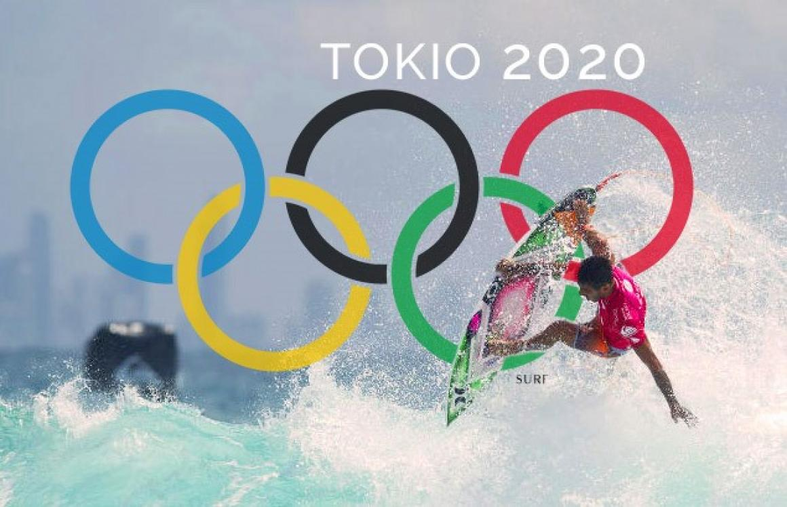
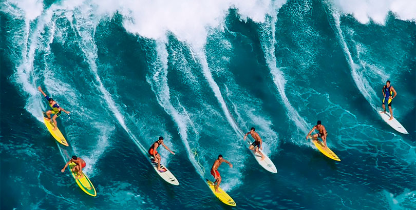

Las competiciones de surf en los Juegos Olímpicos de Tokio 2020 se realizaron en la playa de Tsurigasaki, ubicada en la localidad de Ichinomiya, al sudeste de Tokio, del 25 al 28 de julio de 2021. En este deporte nuevo en el programa olímpico, fueron disputadas dos pruebas diferentes, una masculina y una femenina. El surf es un deporte acuático que consiste en realizar amplios giros y maniobras aprovechando la fuerza de una ola, sobre una tabla.


